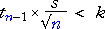
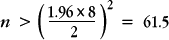

How much data do I need to collect?
Consider estimation of a population mean, µ, from a random sample of size n. A 95% confidence interval will be of the form

If we want our estimate to be within k of µ with probability 0.95, then we need n to be large enough that

Provided we can make a reasonable guess at the likely value of the sample standard deviation, s, it is possible to determine the necessary sample size by trial-and-error in the above inequality.
Equation for the sample size
If n is reasonably large the t-value in the inequality will be approximately 1.96, so

This inequality can be re-written in the form

In practice, it is best to increase n a little over this value in case the sample standard deviation was wrongly guessed.
Example
If we expect that a particular type of measurement will have a standard deviation of about 8, and we want to estimate its mean, µ, to within 2 of its correct value with probability 0.95, the sample size should be

This suggests a sample size of at least 62. (The more accurate trial-and-error method using a t-value would give a sample size of 64.)